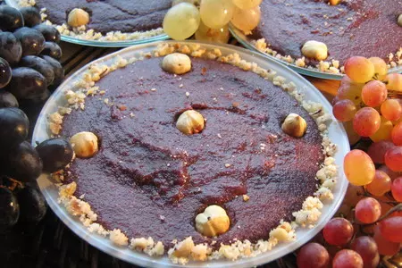

рецепт пеламуша

Описание
Пеламуши (ფელამუში) - дуэль натурального виноградного сока, кукурузной
муки и пшеничной муки. Попробуйте этот уникальный вкус и
наслаждайтесь!
Ингредиенты
- виноградный сок
- кукурузная мука
- пшеничная мука
Способ приготовления
Выжать сок из темного винограда, налить в казанок. Кукурузную и пшеничную
муку смешать; постепенно добавить в сок, помешивая. Поставить казанок на
огонь, довести до кипения, убавить до ниже среднего. Варить 10-15 мин.,
пока не исчезнет привкус муки. От плиты не отходить – постоянно
помешивать, желательно деревянной ложкой. Ещё горячим разлить по тарелкам
порционную посуду или в одну большую, а потом нарезать.
Дом